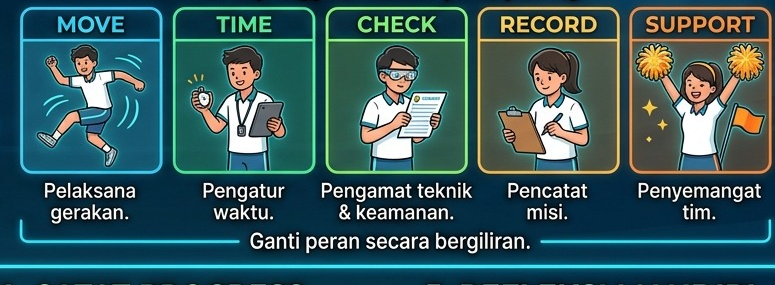
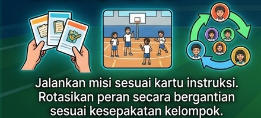
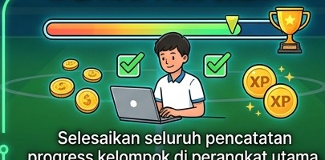

FitQuest
Media Pembelajaran PJOK
Jelajahi berbagai tantangan aktivitas fisik, bekerja sama dengan tim, dan temukan cara terbaik untuk tetap aktif sesuai kemampuanmu
Progress Pos
Akses Cepat
Pembagian Peran Misi
Penjelasan mengenai masing-masing peran (MOVE, TIME, dll) dalam tim.
Baca Selengkapnya ↓Rotasi Peran Tim
Tabel rotasi peran untuk setiap misi bagi anggota tim.
Baca Selengkapnya ↓menu_book Materi Pembelajaran
Pelajari materi dasar sebelum memulai misi latihan fisik
1. Kenali Kebugaran Jasmani
Pahami apa itu kebugaran jasmani dan alasan pentingnya memiliki tubuh yang bugar setiap hari.
Baca Selengkapnya ↓2. Komponen Kebugaran Jasmani
Kenali 5 pilar utama kebugaran jasmani: Kekuatan, Daya Tahan, Kelincahan, Koordinasi, dan Keseimbangan.
Baca Selengkapnya ↓3. Mengenal Circuit Training
Latihan berseri melalui beberapa pos aktivitas berurutan yang melatih kerja sama dan keteraturan.
Baca Selengkapnya ↓4. Safety Check — Bergerak dengan Aman
Panduan keselamatan sebelum dan saat bergerak agar latihan tetap aman, nyaman, dan terhindar dari cedera.
Baca Selengkapnya ↓5. Choose Your Move — Pilih Gerakanmu
Setiap siswa memiliki keunikan tubuh. Pilih variasi gerakan yang paling sesuai dengan kemampuanmu!
Baca Selengkapnya ↓flag Pos Latihan
Selesaikan 5 pos latihan fisik secara berurutan
Wake Up
“Siap mulai bergerak? Pilih cara yang paling nyaman untuk mengaktifkan tubuhmu!”
Power Legs
“Temukan cara terbaik untuk melatih kekuatan kakimu. Pilih gerakan yang sesuai dengan kemampuanmu!”
Push Your Limit
“Tantang dirimu dengan cara yang tepat! Pilih variasi yang membuatmu tetap aktif dan aman.”
Step and Balance
“Jaga keseimbangan, atur langkahmu, dan pilih variasi yang paling nyaman untukmu!”
Final Rush
“Naikkan semangatmu! Pilih cara bergerak yang membuatmu tetap aktif sampai pos selesai!”
bar_chart Visualisasi Data & Evaluasi Siswa
Analisis capaian per tim, per kelas, aktivitas/misi, dan distribusi penilaian kriteria
table_chart Data Hasil Form Input Siswa
Rekapitulasi lengkap input siswa dengan fitur pencarian dan filter per kolom
| Tanggal | Tim | Anggota Siswa | Kelas | Aktivitas / Misi | Hasil/Skor | Form Penilaian (Kriteria) |
|---|---|---|---|---|---|---|
| Memuat data... | ||||||
1. Persiapan Tim
Bentuk kelompok sesuai arahan guru. Gunakan satu perangkat per kelompok untuk membuka website FITQUEST dan mencatat progress misi bersama-sama.

2. Kenali Peran Tim
Setiap anggota memiliki peran penting demi kelancaran aktivitas. Ganti peran secara bergiliran di setiap pos!

3. Misi & Rotasi
Jalankan misi fisik di tiap pos sesuai petunjuk pada kartu instruksi dan video panduan gerak. Rotasikan peran anggota secara bergantian sesuai kesepakatan kelompok.

4. Catat Progress
Setelah misi selesai dijalankan, catat jumlah repetisi / waktu dan form penilaian kelompok di perangkat utama. Selesaikan seluruh pos untuk mengumpulkan skor terbaik!
5. Refleksi Mandiri
Tutup kegiatan pembelajaran dengan membuka menu Refleksi. Setiap siswa mengisi lembar refleksi individu masing-masing untuk mengevaluasi pemahaman kebugaran jasmani.